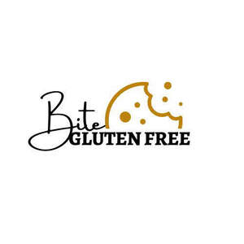

Trade Mark Journal No.2025/041 10 October 2025
UK00004267314 21 September 2025 (9,30,35)

- Class 9
- Downloadable e-books; E-books; Digital books downloadable from the Internet; Downloadable electronic books.
- Class 30
- Gluten-free bakery products; Vegan cakes; Mixes for making bakery products; Bread mixes; Ready-to-bake dough products; Chocolate fillings for bakery products; Gluten-free bread; Gluten-free pizza; Almond cookies; Fried dough cookies; Danish butter cookies; Dairy-free chocolate; Pastries, cakes, tarts and biscuits (cookies); Cookie dough; Vegan hot chocolate; Cookie mixes; Dairy chocolate; Chocolate brownies; Oat biscuits for human consumption; Oat cakes for human consumption; Chocolate food beverages not being dairy-based or vegetable based; Chocolate waffles; Biscuits containing chocolate flavoured ingredients; Buckwheat flour [for food]; Buckwheat flour for food; Chocolate biscuits; Biscuits having a chocolate coating; Snack food products made from rice; Bread biscuits; Muesli desserts; Sugar candy [for food]; Milk chocolate teacakes; Shortbread biscuits; Brownies; Chocolate cakes; Biscuits having a chocolate flavoured coating; Chocolate desserts; Chocolate sweets; Frozen brownie dough; Pre-mixes ready for baking.
- Class 35
- Online marketing; Retail services relating to bakery products; Retail services in relation to bakery products; Retail services in relation to baked goods; Retail services connected with the sale of subscription boxes containing food; Retail services in relation to desserts; Wholesale services in relation to baked goods; Retail services connected with the sale of subscription boxes containing chocolates; Retail services in relation to recorded content; Administration of a discount program for enabling participants to obtain discounts on goods and services through use of a discount membership card; Book club services retailing books to its members; Newspaper subscription services; Newspaper subscriptions; Newspaper subscription services for others.
nadia bibi